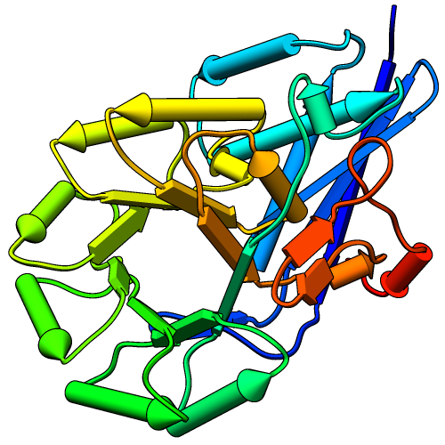
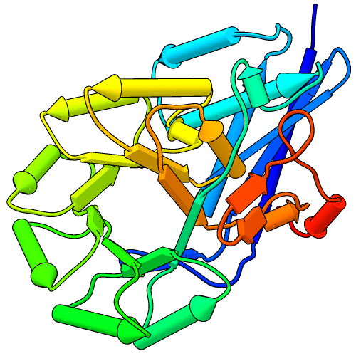
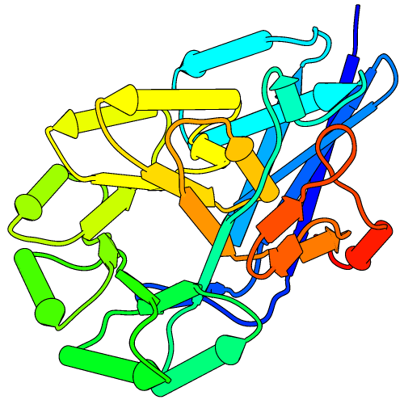
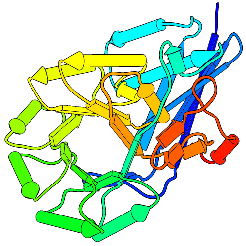

This tutorial describes showing protein helices as “pipes” (cylinders) and strands as “planks” (rectangular boxes) with PipesAndPlanks, and adjusting the lighting to decrease contrast. See also: Axes/Planes/Centroids, presets, tips on preparing images
Start Chimera and show the Command Line (for example, with Favorites... Command Line). Fetch Protein Data Bank entry 2mnr:
Command: open 2mnrThe structure is the enzyme mandelate racemase, containing an N-terminal α+β domain and a C-terminal β/α-barrel domain. Move and scale the structure as desired throughout the tutorial.
| default: two-point, contrast 0.83 |
|  |
The window can be resized by dragging its lower right corner with the mouse or by using a command, for example:
Command: windowsize 500 500Rainbow-color-code the protein chain from blue at the N-terminus to red at the C-terminus:
Command: rainbowStart PipesAndPlanks (under Tools... Depiction in the menu), and click Apply to generate the pipes-and-planks representation with default settings. Helix color, Strand color, and Coil color settings of “No color” indicate that each pipe, plank, and stretch of coil should be colored using the ribbon color of its first residue.
The pipes-and-planks representation is shown in addition to the ribbon, rather than replacing it. Hide the ribbon and atoms:
Command: ~ribbonApply publication preset 1, which sets the background to white and turns on black outlines (silhouettes):
Command: ~disp
Command: preset apply pub 1The first example image was saved with the current settings, including default lighting.
| two-point, contrast 0.4 | ambient-only |
|  |  |
While shading can enhance the perception of depth, shapes, and orientations, it can also make colors muddy and images harder to interpret. One way to lighten the shading is to decrease the contrast, for example:
Command: light contrast 0.4The default lighting mode, two-point, includes two directional lights and ambient (nondirectional) light. Decreasing the contrast increases the ambient light and gives a flatter appearance.
A yet flatter appearance, similar to a line drawing, can be achieved by changing the lighting mode to ambient-only:
Command: light mode ambientThe lighting mode and contrast can also be adjusted in the Lighting tool (under Tools... Viewing Controls in the menu), along with other related settings.
| ambient-only, more outlines |
|  |
In the ambient-only lighting mode, some of the object contours are lost. However, more black outlines can be added using edge color settings in the PipesAndPlanks dialog. The last example image was saved in the ambient-only lighting mode after setting the Helix edge color and Strand edge color to black, but leaving the Coil edge color as “No color.”
A color setting can be changed by clicking the square color well and using the resulting Color Editor. The current color can be changed by moving the sliders or by entering a color name (for example, black) in the Color name field. The active color well should change concurrently, but drag-and-drop from the Color Editor to a color well or between two color wells will also work.
Click Apply in the PipesAndPlanks dialog to apply your changes. The edges may look quite fuzzy in the Chimera window, but image supersampling (on by default) will make them smoother in saved images. All images in this tutorial were saved using File... Save Image with default settings.
Try other changes if you wish; adjustable settings include pipe radius, plank width, and whether to show helix and strand N→C directionality with arrowheads.
{kind=link}
{kind=link}
{kind=link}
{kind=link}